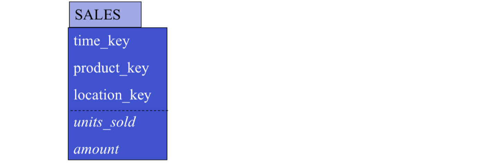

本周主要内容：
- Logical Model
- Query Language
- Physical Model and Query Processing Technologies
- Materialized Cuboids and Efficient Computing Cuboids
The Logical Model
Two main approaches:
- Using relational DB technology:
- Star schema
- Snowflake schema
- Fact constellation
- Using multidimensional technology:
- Just as multidimensional data cube
首先解释维度建模两个基本概念，一个是事实表（Fact Table），一个是维度表（Dimension Table）
Fact Table
事实表一般由两部分组成，维度（Dimension）和度量（Measurement）。
事实表可以通俗的理解为「什么人在什么时间做了什么事」的事实记录或者场景上下文，拥有最大的数据量，它是业务流程的核心体现。比如订单的场景(table第一行)：
产品76Ha在商店S136卖了10个，共计40刀，时间xxx
Fact table:

Dimension Table
维度表用于对事实表的补充说明，描述和还原事实发生时的场景。
这个例子我们用了三个维度：产品，时间，地址。
对于每一个维度而言，都有若干个属性来描述，比如产品有名称，类别，品牌，颜色等信息。这些维度的属性就是之后数据统计的依据，比如我们可以统计不同类别，不同品牌，不同颜色在订单中的差异，从向用户制定更精细的营销策略。
Star schema
The most common modeling paradigm is the star schema, in which the data warehouse contains:
- a large central table (fact table) containing the bulk of the data, with no redundancy
- a set of smaller attendant tables (dimension tables), one for each dimension.
The schema graph resembles a starburst, with the dimension tables displayed in a radial pattern around the central fact table.
A fact table in the middle connected to a set of dimension tables.
For example:
其实这里的star schema是由universal schema经过normalization转化而来，具体有：
- Each dimension is represented by a dimension-table
- LOCATION (location_key, store, street_address, city, state, country, region)
- dimension tables are not normalized
- Transactions are described through a fact-table
- each tuple consists of a pointer to each of the dimension-tables (foreign-key) and a list of measures (units_sold; amount)
Star schema 优点：
Facts and dimensions are clearly depicted
- dimension tables are relatively static, data is loaded (append mostly) into fact table(s)
- easy to comprehend (and write queries)
Snowflake schema
A refinement of star schema where some dimensional hierarchy is normalized into a set of smaller dimension tables, forming a shape similar to snowflake
Normalization：Database normalization, or simply normalization, is the process of restructuring a relational database in accordance with a series of so-called normal forms in order to reduce data redundancy and improve data integrity. Normalization entails organizing the columns (attributes) and tables (relations) of a database to ensure that their dependencies are properly enforced by database integrity constraints. It is accomplished by applying some formal rules either by a process of synthesis (creating a new database design) or decomposition (improving an existing database design).(RDMS的1NF->2NF->3NF等等的转换)
Star schema V.S. Snowflake schema:
- Star schema:
- Snowflake schema:
由此可知，Snowflake schema只要经过Denormalization就可以变回Star schema.
在关系型数据库三范式（3NF）设计中，我们极力避免数据的冗余，达到数据的高度一致性。但在数据仓库中，这样的设计并不是最佳实践，因为与巨大的fact table相比，dimension table本身很小，所以减少冗余节省的空间忽略，而且执行查询需要更多的连接操作，Snowflake的结构性能会降低。
所以在维度建模中，维度表一般采取反范式的设计，在一张维度表中扁平化的存储维度的属性，尽量避免使用外键。也就是说Snowflake在实际中用的更多。
Fact constellation
Multiple fact tables share dimension tables, viewed as a collection of stars,
therefore called galaxy schema or fact constellation.
For example:
Query Language
- Two approaches:
- Using relational DB technology: SQL (with extensions such as CUBE/PIVOT/UNPIVOT)
- Using multidimensional technology: MDX
下图左边的是SQL，右边的是MDX。相较而言，MDX更为简单，因为它的语句更加直观简洁。
Physical Model
Data Warehouse architecture分为3层：
- 最底层，Data Warehouse Server
- 中间层，OLAP Server
- 最高层，Front-end Tools
- OLAP Server Two main approaches:
- Using relational DB technology: ROLAP
- Using multidimensional technology: MOLAP
- Hybrid: HOLAP
- Base cuboid: ROLAP
- Other cuboids: MOLAP
Relational OLAP (ROLAP) servers: These are the intermediate servers that stand in between a relational back-end server and client front-end tools. They use a relational or extended-relational DBMS to store and manage warehouse data, and OLAP middleware to support missing pieces. ROLAP servers include optimization for each DBMS back end, implementation of aggregation navigation logic, and additional tools and services. ROLAP technology tends to have greater scalability than MOLAP technology. The DSS server of Microstrategy, for example, adopts the ROLAP approach.
Multidimensional OLAP (MOLAP) servers: These servers support multidimensional views of data through array-based multidimensional storage engines. They map multidimensional views directly to data cube array structures. The advantage of using a data136 Chapter 3 Data Warehouse and OLAP Technology: An Overview cube is that it allows fast indexing to precomputed summarized data. Notice that with multidimensional data stores, the storage utilization may be low if the data set is sparse. In such cases, sparse matrix compression techniques should be explored (Chapter 4). Many MOLAP servers adopt a two-level storage representation to handle dense and sparse data sets: denser subcubes are identified and stored as array structures, whereas sparse subcubes employ compression technology for efficient storage utilization.
Hybrid OLAP (HOLAP) servers: The hybrid OLAP approach combines ROLAP and MOLAP technology, benefiting from the greater scalability of ROLAP and the faster computation of MOLAP. For example, a HOLAP server may allow large volumes of detail data to be stored in a relational database, while aggregations are kept in a separate MOLAP store. The Microsoft SQL Server 2000 supports a hybrid OLAP server.
HOLAP example:

We use the relational technology to store the base cuboid. The base cuboid is the fact table of star schema. While the aggregations below the base cuboid we use the multidimensional technology.
Query Processing Techniques
Selection on low-cardinality attributes: Bitmap Index
BI on dimension tables
- Index on an attribute (column) with low distinct values
- Each distinct values, v, is associated with a n-bit vector (n = #rows)
- Multiple BIs can be efficiently combined to enable optimised scan of the table